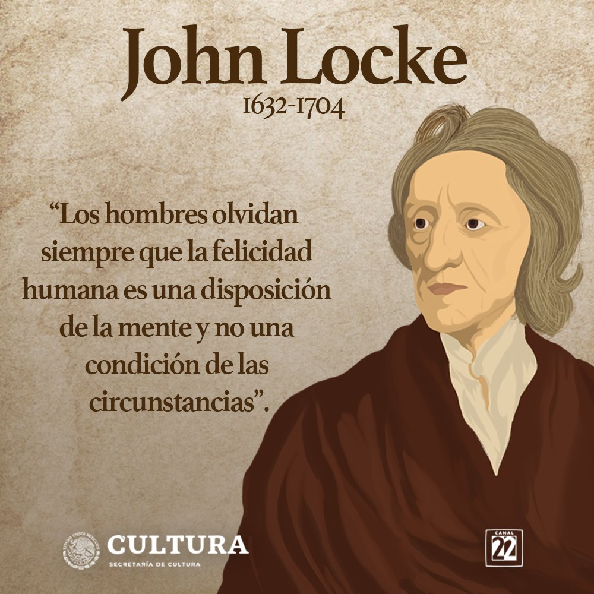

"LA FELICIDAD HUMANA"
La felicidad es una palabra muy complejo de definir, ya que todas la personas no somos iguales y por lo tanto somos felices de distintos motivos, y todo esto nos da a conocer que la felicidad depende de la percepción que cada persona o ser humano respecto a distintas cosas o situaciones, además en algunas veces pensamos que algo nos va a satisfacer pero después de un tiempo nos damos cuenta de que aquello no nos genero felicidad si no que fue algo pasajero, la felicidad es concepto subjetivo porque depende individualmente. La felicidad es todo lo que queremos los humanos, pero muy pocos logran conseguirla ya pueden ser por problemas o situaciones tristes que nos impide tener la felicidad que tanto anhelamos.
Mi idea sobre la felicidad es hacer cosas que ame, por ejempló, me gusta practicar deporte por lo tanto lo hago todos los días y disfruto de ello, pero si una persona trabaja o hace cosas que le toca hacer por presión claramente no estará feliz de hacerlas y desde allí comienza una vida infeliz en sigo mismo, por eso a veces debemos de dejarnos llevar por los sentimientos y no de las opiniones de los demás, si tenemos pensamientos felices nuestra vida será feliz y si por lo contrario pensamos triste nuestra vida será infeliz. La vida esta llena de alegrías, llanto, tristezas, odio, risa y amor, puede ser que alguna vez el ser humano alcance su felicidad cuando se acepte a si mismo tal como es, ya se por todo lo que le ha dado la vida, su salud física y mental además cuando sabe ganar y perder.
La felicidad no es algo que se encuentre por el simple destino, aunque yo quisiera ser feliz y lo quiero desde los más lejos de mi alma, yo no creo que la felicidad completa exista ya que en esta vida debemos luchar y combatir a aquellos obstáculos que nos genera la vida, pero a veces no nos saldrán como lo deseamos. Pero si tenemos unos sueños y metas que nos generan felicidad debemos ir en busca de ellos así la vida nos de golpes debemos seguir adelante hasta logar cumplir aquello que nos generas felicidad porque de si no lo contrario viviremos infelices el resto de nuestra vida.
Algunas personas encuentran la felicidad por medio de el dinero y objetos materiales, ya sea que a ellos les genere felicidad pero para mi eso es solo un gusto y una necesidad pasajera, ya que las personas poderosas buscan la manera de esclavizar a los humanos de su felicidad ya sea por lo material y entre otras cosas porque le hacen crear una necesidad y ellos podérsela complacer y en algunos casos las personas son infelices por estas situaciones así que para mi lo material no lo es todo si una pequeña parte de nuestra propia felicidad. debemos realizar las cosas que nos genera felicidad asi a los demás no les guste, desde que nosotros mismos nos sentamos feliz el resto es aparte, además seamos feliz con nuestro interior
Para mi no hay necesidad de centrarse en las emociones negativas. Es mejor durar en relaciones felices y sanas con personas que merecen estar en tu vida, porque saben lo importante que son las personas. A veces Las personas necesitan la compañía de otros para disipar su soledad, porque la soledad a menudo hace que las personas entretengan cosas negativas como problemas y dolor. Por lo tanto las personas deben buscar a extraños que entren en sus vidas y se acerquen a ellos, en ocasiones, no todas las personas tienen buenas intenciones. Muchas personas se aprovechan de la inocencia de los demás y asi a veces acaban con la felicidad de la persona y la transforma en odio y esa persona hace lo mismo con otra y así sucesivamente hasta generar un numero muy grande de personas infelices, sin embargo me hago una pregunta. ¿vale la pena creer en la felicidad?
En conclusión, la única forma de alcanzar la felicidad es por medio de realizar las cosas que a cada persona ame de corazón a la hora de realizarla, las cuales permitirán aumentar la percepción de emociones positivas. Se debe disfrutar el presente, ver con esperanza el futuro por medio de nuestras acciones positivas, y siempre dedicar tiempo para actividades que nos generen mucha felicidad en nuestra vida, en si la felicidad es individual de cada persona, De hecho, la mayoría de la gente tiene que trabajar duro durante mucho tiempo para alcanzar la felicidad pero como lo he dicho la felicidad no se encuentra si no se busca y se lucha, por eso es difícil de conseguir, solo les digo que nunca abandonen sus sueños y metas si logras imaginarlos puedes lograrlos nunca desmayes hasta lograr aquello que te genera felicidad.